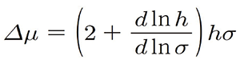
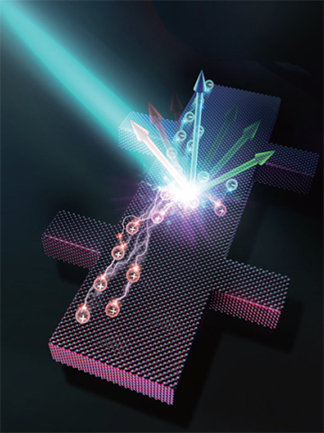
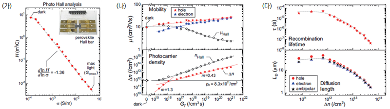

Report by Subjects
Report by Subjects
KAIST RESEARCH ACHIEVEMENTS
Carrier-Resolved
Photo-Hall Effect
Department of Materials Science & Engineering
Byungha Shin
Summary
Hall Effect has become among the most common semiconductor benchmarks over the past century and is ubiquitous in semiconductor research labs around the world. However, the Hall effect gives us insight into only one type of the charge carriers. We learn the properties of solely the dominant charge carrier (or majority carrier), be it electrons OR holes – but not both. In many modern applications the non-dominant carrier, known as the minority carrier, is crucial. The newly developed “Carrier Resolved Photo-Hall” (CRPH) technique allows us to extract an astonishing amount of information from BOTH carriers in a single measurement sitting. As reported in the paper, in contrast to only three parameters obtained in the classical Hall measurement, this new technique yields up to seven parameters at every tested light intensity:the mobility for both electron and hole, their carrier density under light, recombination lifetime, and diffusion lengths for electron, holes and ambipolar type; all of these can be repeated N times i.e. the number of light intensity settings used in the experiment. This technique is extremely valuable in many applications, such as developing and optimizing new materials for solar cells or optoelectronics devices.
Background (objectives)
The Hall effect, discovered in 1879 by Edwin Hall, is a measurement technique that gives critical insight about the invisible charge carriers in a material; their type, density, and mobility or speed. These are among the most critical information required to understand and design a semiconductor device such as solar cells. For this reason, the Hall Effect has become one of the most common semiconductor characterization techniques over the past century and is ubiquitous in semiconductor research labs around the world. However, there was a long-standing limitation with the Hall effect. The ‘classical’ Hall effect gives us insight into only one type of the charge carrier. We learn the properties of solely the dominant charge carrier (or majority carrier), be it electrons or holes – but not both.
In order to try and obtain information about both carriers, the sample must be illuminated in order to photogenerate holes and electrons which both contribute to the electric properties of the material. Although this ‘photo-Hall’ technique has been known among the semiconductor community for years, researchers were unable to extract information of both carriers simultaneously, due to the complex nature of carrier interaction within a semiconductor material under illumination.
Contents
The team's discovery, named “Carrier-Resolved Photo-Hall” technique, allows us to extract an astonishing amount of information from both carriers in a single measurement sitting. The key insight comes from measuring the conductivity and Hall coefficient as a function of light intensity. Hidden in the trajectory of the conductivity-Hall coefficient (σ-h) curve exists a crucial piece of information: the difference in mobility of both carriers, as elegantly expressed by the following identity equation:

Starting with a known majority carrier mobility from the traditional Hall measurement, we can learn the minority carrier mobility and solve for the minority carrier density. With a known light illumination intensity, the carrier lifetime can similarly be established. As reported in the paper, in contrast to only three parameters obtained in the classical Hall measurement, this new technique yields up to seven parameters at every tested light intensity: the mobility for both electron and hole, their carrier density under light, recombination lifetime, and diffusion lengths for electron, holes and ambipolar type. Carrier-resolved Photo-Hall was applied to world record perovskite solar cells, as shown in Fig. 2, to establish the power of this technique
 [Figure 1] Carrier-Resolved Photo-Hall Concept Illustration

[Figure 2] Organic-inorganic hybrid perovskite thin film photo-Hallmeasurement analysis and results
(a) σ–H plot for photo-Hall analysis. Inset, the perovskite Hall bar device
(b) Majority (μP) and minority (μN) carrier mobility and photocarrier density (Δn) plotted against absorbed photon density (Gγ)
(c) Recombination lifetime (τ) and diffusion length (LD) mapped against Δn
Expected effect
The Hall effect has played a fundamental part in the advancement of semiconductor technology such as the discovery of Nobel prize-winning quantum Hall effect. The discovery of the Carrier-Resolved Photo-Hall effect is extremely valuable in many applications, such as developing and optimizing new materials for solar cells or optoelectronics devices.
Research Outcomes
[Paper] O. Gunawan*, S. R. Pae, D. M. Bishop, Y. Virgus, J. H. Noh, N. J. Jeon, Y. S. Lee, X. Shao, T. Todorov, D. B. Mitzi, B. Shin*, “Carrier-resolved photo-Hall effect”, Nature 575, 151 (2019) [2018 Impact Factor = 41.577]
[Press release] Over 10 press releases abroad
Research Funding
NRF, the Technology Development Program to Solve Climate Changes of the National Research Foundation
KETEP, the Korea Institute of Energy Technology Evaluation and Planning